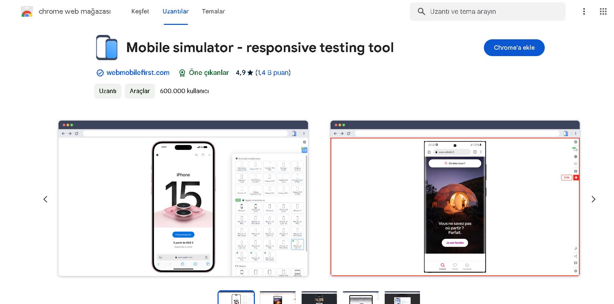

Salam, biz bu programı mobile versiyaya uyğun dizayn etmişik
tam ideal bir görüntü almaq üçün yuxarıda göstərilən extention-dan
istifadə vacibdir!
1. "Add Extention" düyməsinə click edərək extention-ı yükləyin.
2. "Start Program" düyməsinə click edərək programa daxil olun.
3. Proqrama daxil olduqdan sonra yuxarıdan "Yapboz" işarəsinə click edərək
yüklədiyiniz extention-ı aktiv edin.